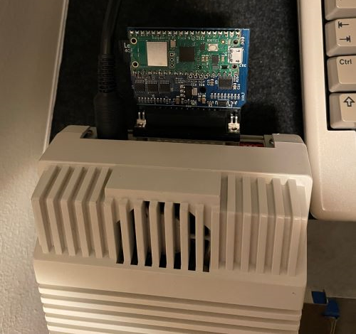
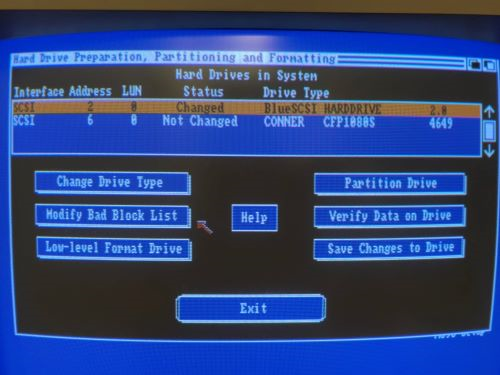

The Solana Vanishing Act
The Solana Vanishing Act
I have a BlueSCSI v2 external DB25 version and as the Commodore A590 sidecar hard drive for my Amiga 500 also has a DB25 port on it's back, I thought it would be good to use it as a backup of the internal SCSI drive and maybe as a means of file transfer too. It turned out to be very easy, even though not without some inconveniences.
The first thing is that the 3D printed case has to be removed from the BlueSCSI v2, as with the case on it won't fit on the DB25 port due to the power plug being too close. With the case removed, it fits nicely. Another issue is that the SD card slot is facing the power plug, so you can't swap the SD card without either unplugging the BlueSCSI or the power plug first. Besides these two issues however, I couldn't find anything else really. It just works great!

The steps I did:
First I created a bluescsi.ini based on the documentation with these contents:
[SCSI] System="Generic" EnableSCSI2=0 ; Off PrefetchBytes=0 [SCSI0] Vendor=Blue Product=Bluedrive Version=1.0 SectorsPerTrack=32 HeadsPerCylinder=1
Then I used FS-UAE to create an empty 250MB hard file, which I copied to the SD card with the following file name:
HD2 - AmigaWB13.hda
Plugged the SD card in the BlueSCSI and plugged the BlueSCSI into the DB25 port of the A590 and fired it up. Using the HDToolBox from the A590 installation floppy disk it could find the BlueSCSI drive right away and I could partition it. I created two partitions to back up my WB and Work partitions on my internal SCSI drive, then I formatted them using FastFileSystem. I made the backup WB partition bootable with a reduced boot priority so I can start the system from the BlueSCSI also if anything would go wrong with the internal drive and so I can boot it with an emulator.

What was left to do was to copy the files over with a file manager. I tried loading the disk image with FS-UAE and it works nicely, so I can actually copy new stuff to it and use the SD card as a means of file transfer.